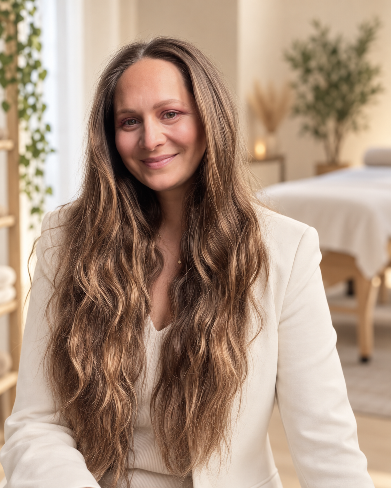
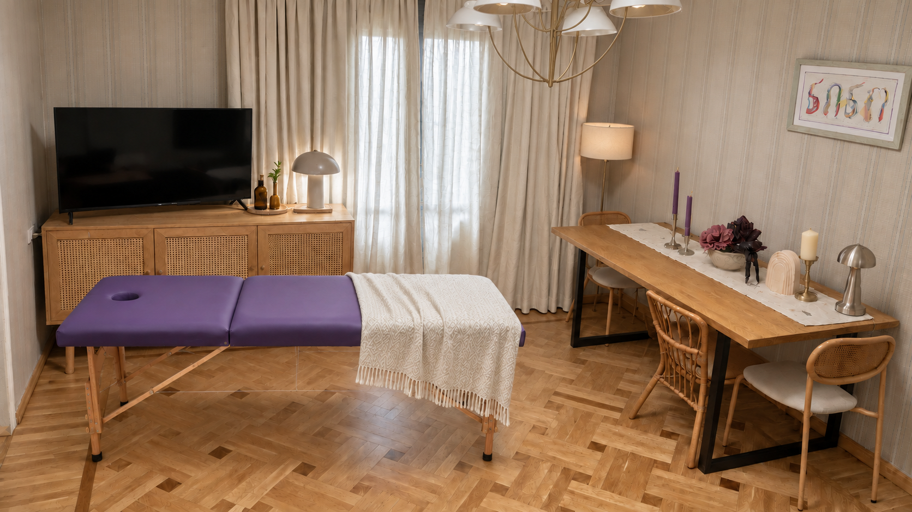

ქუთაისი · მასაჟი · რეაბილიტაცია · ბავშვთა მასაჟი
მასაჟი და რეაბილიტაცია ქუთაისში
ნინო აბაზაძე - მასაჟისტი რეაბილიტოლოგი ქუთაისში. სამკურნალო მასაჟი, ბავშვის მასაჟი, სხეულის აღდგენა და ინდივიდუალური რეაბილიტაციის გეგმა წინასწარი ჩაწერით.


ქუთაისი, საქართველო
ჩემს შესახებ
ნინო აბაზაძე - მასაჟისტი რეაბილიტოლოგი ქუთაისში
მე ვარ ნინო აბაზაძე, მასაჟისტი რეაბილიტოლოგი ქუთაისში, 5 წლიანი პრაქტიკული გამოცდილებით. ჩემთვის მნიშვნელოვანია ყურადღებით მოვისმინო თქვენი საჭიროებები და გასაგებად აგიხსნათ ვიზიტის პროცესი.
ყოველი ვიზიტი იწყება შეფასებით. პროცედურა იგეგმება ჩივილის, ასაკის, დატვირთვის, ტკივილის ტიპისა და აღდგენის მიზნის მიხედვით.
2022 წლიდან 2026 წლის მაისამდე ვმუშაობდი „სიმეტრიაში“.
სამკურნალო მასაჟირეაბილიტაციაბავშვთა მასაჟი
გამოცდილება
გაიცანით სპეციალისტი ვიზიტამდე
5 წლიანი გამოცდილება და მუშაობა „სიმეტრიაში“ 2022 წლიდან 2026 წლის მაისამდე. ვიზიტის დროსა და მომსახურების დეტალებზე უშუალოდ ნინოს შეუთანხმდებით.
სერვისები
თქვენს საჭიროებებზე მორგებული მომსახურებები
სამკურნალო მასაჟი ქუთაისში
ზურგის, კისრის, მხრების და კუნთოვანი დაძაბულობის დროს სამკურნალო მასაჟი ეხმარება სხეულს მოდუნებაში, ტკივილის შემცირებასა და ყოველდღიური მოძრაობის გაუმჯობესებაში.
აირჩიეთ 30 ან 45 წუთიანი სესია. ფასები იხილეთ ქვემოთ.
ჩაწერარეაბილიტაცია ქუთაისში
რეაბილიტაცია მოიცავს მოძრაობის შეფასებას, დატვირთვის ეტაპობრივ დაბრუნებას და აღდგენის გეგმას ტრავმის, გადაღლის ან მოძრაობის შეზღუდვის შემდეგ.
აირჩიეთ 30 ან 45 წუთიანი სესია. ფასები იხილეთ ქვემოთ.
ჩაწერაბავშვთა მასაჟი ქუთაისში
ბავშვის მასაჟისტი მუშაობს ნაზი ტემპით, ასაკის, განწყობის და საჭიროების გათვალისწინებით. პროცედურა ტარდება მშობელთან კომუნიკაციით.
აირჩიეთ 30 ან 45 წუთიანი სესია. ფასები იხილეთ ქვემოთ.
ჩაწერასესიის ღირებულება
ფასები მოცემულია ლარში. სასურველი დრო წინასწარ შეათანხმეთ ნინოსთან.

პრემიუმ მიდგომა
მიზანი არის არა მხოლოდ მოდუნება, არამედ მოძრაობის უკეთესი ხარისხი და სხეულის უსაფრთხო აღდგენა.

ვიზიტის დაგეგმვა
რომელი მომსახურება შეესაბამება თქვენს საჭიროებას?
ჩაწერისას მოგვიყევით, რა გაწუხებთ და რა მიზანი გაქვთ. ეს დაგვეხმარება განვიხილოთ მომსახურება და პირველი ვიზიტის დეტალები.
ბავშვთა მასაჟზე ჩაწერისას მიუთითეთ ბავშვის ასაკი. მომსახურების შესაბამისობასა და ვიზიტის პირობებს მშობელთან ერთად წინასწარ ვაზუსტებთ.
პროცესი
როგორ მუშაობს ვიზიტი
მარტივი, გასაგები და კომფორტული პროცესი პირველი ზარიდან რეკომენდაციამდე.

01
ჩაწერა
ვაზუსტებთ ჩივილს, ასაკს, მიზანს და ვთანხმდებით ვიზიტის დროს.
02
შეფასება
ფასდება მოძრაობა, დატვირთვა და დისკომფორტის ძირითადი მიზეზი.
03
პროცედურა
ინტენსივობა, ტექნიკა და ხანგრძლივობა მორგებულია კონკრეტულ მდგომარეობაზე.
04
რეკომენდაცია
იღებთ რჩევებს გაგრძელების სიხშირეზე და სახლში მოვლის წესებზე.
ხშირი კითხვები
ვიზიტამდე ხშირად დასმული კითხვები
როგორ ჩავეწერო ვიზიტზე?
დარეკეთ ნომერზე +995 571 088 021 ან მოგვწერეთ WhatsApp-ზე. ვიზიტის დრო ნინოსთან შეთანხმების შემდეგ დასტურდება.
სად მდებარეობს კაბინეტი?
ქუთაისი, ბალახვანი, ლომონოსოვის 2. კონტაქტების სექციაში მისამართზე დაჭერით Google Maps გაიხსნება.
რა ღირს სესია და რამდენ ხანს გრძელდება?
30 წუთიანი სესია ღირს 40 ₾, ხოლო 45 წუთიანი — 60 ₾. სასურველი ხანგრძლივობა და დრო შეათანხმეთ ჩაწერისას.
როგორ მოვემზადო პირველი ვიზიტისთვის?
ჩაწერისას განვიხილავთ თქვენს საჭიროებას და გეტყვით, რა უნდა გაითვალისწინოთ ან წამოიღოთ პირველ ვიზიტზე.
შესაძლებელია ბავშვთა მასაჟზე ჩაწერა?
დიახ. ჩაწერისას მოგვწერეთ ბავშვის ასაკი და ვიზიტის მიზანი, რათა წინასწარ განვიხილოთ მომსახურების შესაბამისობა და პირობები.
როგორ გადავიტანო ვიზიტი?
თუ შეთანხმებულ დროს ვერ მოდიხართ, რაც შეიძლება ადრე დაგვიკავშირდით ტელეფონით ან WhatsApp-ზე და შევათანხმოთ სხვა დრო.
დაიწყეთ აღდგენა დღეს - ჩაიწერეთ ვიზიტზე
+995 571 088 021კონტაქტი
ვიზიტი წინასწარი ჩაწერით
მიღება წინასწარი შეთანხმებით. ვიზიტი დადასტურებულია მხოლოდ ნინოსთან დროის შეთანხმების შემდეგ. მისამართის ღილაკი გახსნის Google Maps-ს.